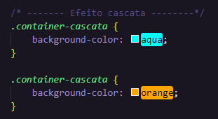
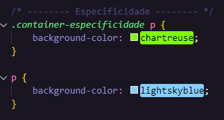

Observe como o efeito cascata funciona, o codigo de cima "background-color: aqua;" é sobrescrito pelo código de baixo "background-color; orange;". Isso acontece porque o CSS lê o código de cima para baixo então ele sempre aplica a última coisa que aparece. Seja na pasta do CSS ou no CSS inline (estilo dentro do HTML), o que não é recomendado. O código acima é para essa sessão, aqui era para ser "aqua" porém o "orange" vem depois e ele que prevalece.

Já no caso da Especificidade o CSS vai ser aplicado no elemento mais especifico que você puser. Veja esse parágrafo por exemplo "p", quando colocamos somente "p" com a cor "lightskyblue" ele não aplica mesmo ela sendo a última. Aqui o CSS aplica o que é mais específico que é o ".container-especificidade p - background-color: chartreuse;" o valor de Especificidade dele é de 0, 1, 1 - quanto o 'p' é de apenas 0, 0, 1.
Podemos colocar ainda mais Especificidade em um elemento que é usando um "ID", mas o ID só pode ter 1 por página. O ID tem peso de 1, 0, 0 sendo ele mais específico que os outros e tem mais peso, por tanto o CSS aplica ele de prima.😁
Outra forme de especificar mais ainda é usar o atributo "style" dentro de uma tag HTML, não é recomendado fazer a menos que seja MUITO necessário. Ao colocar esse atributo o CSS vai sempre aplicar ele mesmo com ID presente.